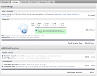

Contents |
What
The settings screen lets you change basic settings for your cloud including:
- associated local project
- cloud size
- support options, and
- team options
How
Site Settings
  Cloud Size Settings
Cloud Size Settings
{kind=link}
This graphic shows your current plan and services and enables you to change on demand to a different set.
Cloud Size: Use the slider to increase the size of your cloud from the following packages:
- 1/4 GB ram with 5 GB disk space
- 1/2 GB ram with 10 GB disk space
- 1 GB ram with 15 GB disk space
- 2 GB ram with 25 GB disk space
Additional Services
- 24/7 Support: Add 24 hour a day site down monitoring to the base normal business hour response window. (For a complete description of this option please review the Clouds Terms of Service.)
- Unlimited Team: Enables multiple developers to work on the Cloud project.
Summary
The billing info for this site will be shown here. You can change the credit card information under My Account - Billing. If you have made any changes on this screen, you must click the apply changes button.
Delete a Site
{kind=link}
Though you may never need to do so, you can delete your cloud site on this page by clicking the delete site... button.
Please note: Deleting a site is immediate, and cannot be undone; Aptana cannot restore your site. All data, services and databases are dropped from the cloud servers. Also, while the site will be deleted right away, you may not be able to reuse your domain for a short while. Domains usually become available again within 10 minutes.
Getting to My Cloud - Settings
- choose Open Aptana Home from the Window menu
- click the My Cloud tab
- select a cloud site from the list on the left side
- click the settings tab in the sub navigation